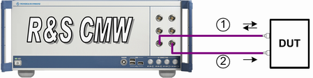

Test Setup for RX Diversity Scenarios without Dual Band
RX diversity scenarios require two TX modules and a UE with two WCDMA antennas.
If internal fading has to be used, the test setup is the same as for the dual carrier scenario with internal fading.
If external fader has to be used (e.g. SMW200A), the test setup is the same as for the scenario with external fading.
The following figure illustrates which paths the RF signals use. Fader signal consists of fading superimposed on the original downlink signal.

Test setup for RX diversity (single band)
1 = uplink plus faded downlink signal of carrier one and two (if needed) to the first antenna of the UE
2 = the second downlink path (carrier one and two) to the second antenna of the UE